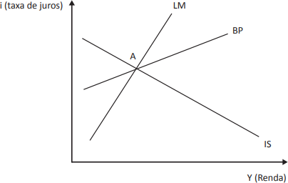

A seguinte notícia foi veiculada em 8 de abril de 2018.
Em apontamentos realizados no Fundo Monetário Internacional (FMI) em Washington, o presidente do Banco Central do Brasil destacou que, no início da sua gestão, foi dada alta prioridade para ancorar expectativas de inflação antes do início do ciclo de redução de juros, o que baixou a Selic de 14,25% para os atuais 6,5%.
Disponível em: http://www.jb.com.br. Acesso em: 26 jun. 2018 (adaptado).
O gráfico a seguir apresenta uma pequena economia aberta do modelo IS-LM-BP, com mobilidade imperfeita de capitais, caracterizada pela curva BP menos inclinada que a curva LM, e expectativas econômicas ancoradas que operam em regime de câmbio flexível. O ponto A indica o equilíbrio interno e externo inicial.
Considere que foi adotada uma política monetária expansionista, levando a economia para um novo equilíbrio interno e externo.
Nesse contexto, é correto afirmar que